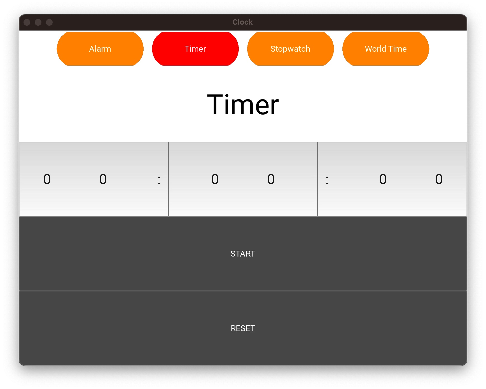

Clock App

Timer page on my clock application
I may be one of those few people that prefer to use the timer app on my computer than on my phone. Thankfully,
my Windows PC had that was really convenient to use. However, when I got a mac in 2020, I was dismayed that I couldn't
find a first or third party apps. To solve this problem, I quickly decided that I wanted to create this, in my opinion,
critical application myself.
The Process
I learned the Kivy framework built on Python to develop mobile and computer applications.
I learned different functionality in a clocks app (timer, stopwatch, and local time)
I tuned the timer and stopwatch to accurately represent the time (optimizing its functionality to prevent
any lag that might result in inaccuracies)